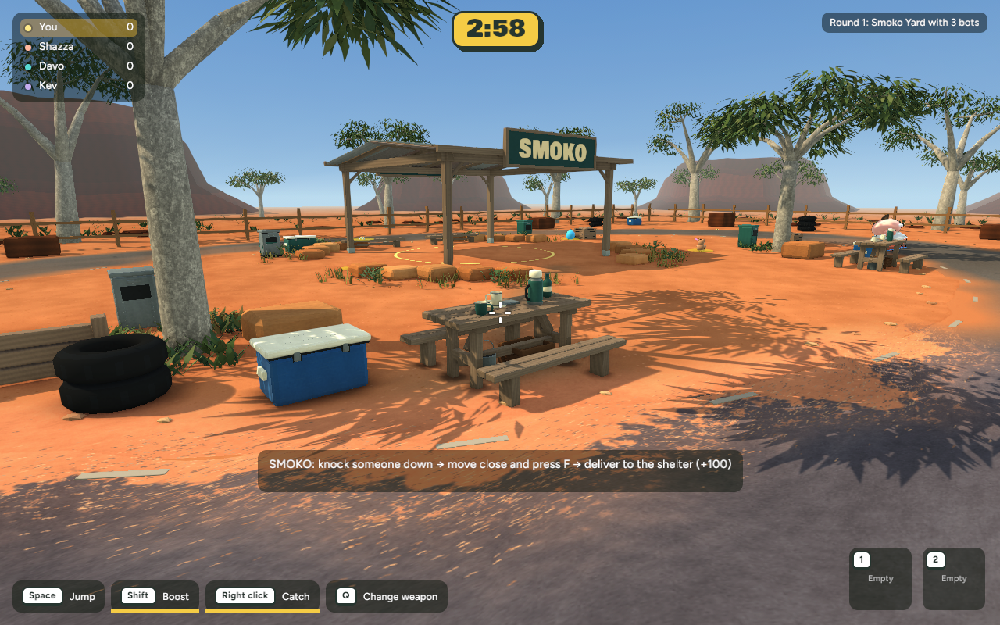
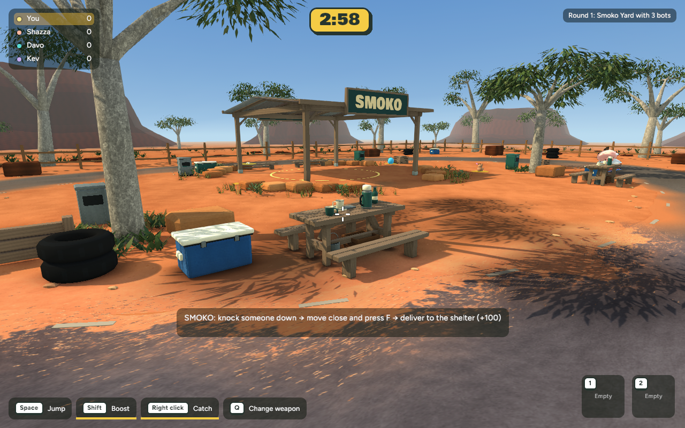
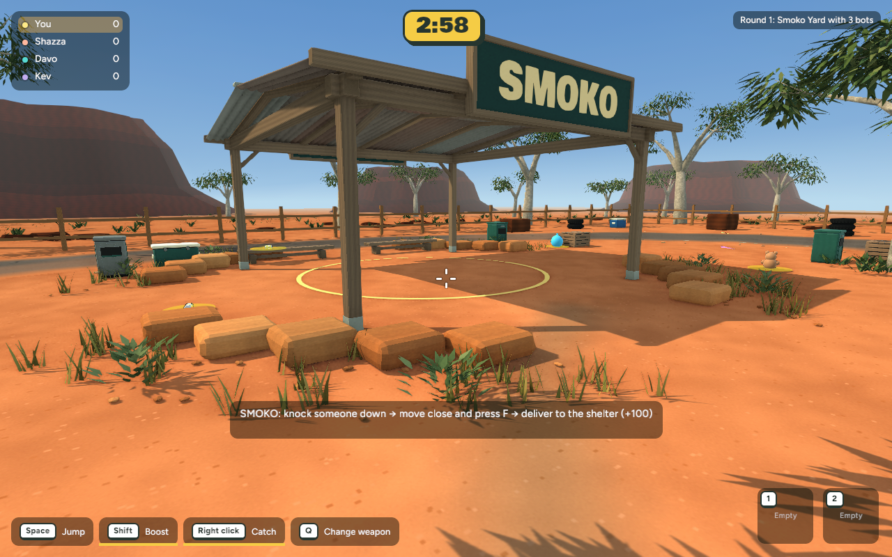
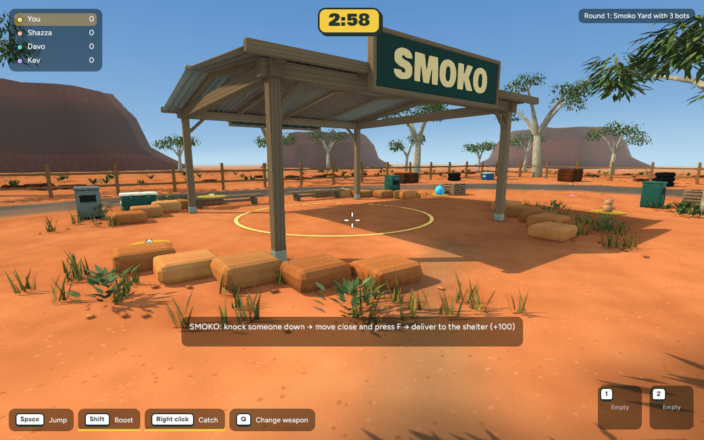

Follow the shade from the esky across the picnic table, then look at the sunlit opening around the SMOKO sign. Select either capture for the full-size image.




Bush Servo concept · Verification and recovery